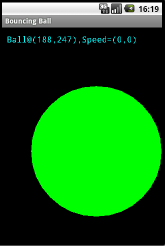

Custom 2D Graphics
Android support 2D graphics via its own library in packages android.graphics.drawable and android.view.animation. Take note that Android does not support JDK's AWT and Swing.
[TODO] more
Example 1: Bouncing Ball
Let us illustrate custom 2D graphics with the classical bouncing ball.
Example 1a: Simple Bouncing Ball
Create a project called "BouncingBall", with application name of "Bouncing Ball" and package "com.example.bouncingball". Create a main activity called "MainActivityactivity_main".
MainActivity.java
package com.example.bouncingball; import android.app.Activity; import android.graphics.Color; import android.os.Bundle; import android.view.View; public class MainActivity extends Activity { /** Called when the activity is first created. */ @Override public void onCreate(Bundle savedInstanceState) { super.onCreate(savedInstanceState); View bouncingBallView = new BouncingBallView(this); setContentView(bouncingBallView); bouncingBallView.setBackgroundColor(Color.BLACK); } }
Dissecting MainActivity.java
In method onCreate(), we construct an instance of our own custom View (called BouncingBallView to be written next), and set it as the content-view of the MainActivity.
BouncingBallView.java
Create a new Java class for BouncingBallView.java:
package com.example.bouncingball; import android.content.Context; import android.graphics.Canvas; import android.graphics.Color; import android.graphics.Paint; import android.graphics.RectF; import android.view.View; public class BouncingBallView extends View { private int xMin = 0; // This view's bounds private int xMax; private int yMin = 0; private int yMax; private float ballRadius = 80; // Ball's radius private float ballX = ballRadius + 20; // Ball's center (x,y) private float ballY = ballRadius + 40; private float ballSpeedX = 5; // Ball's speed (x,y) private float ballSpeedY = 3; private RectF ballBounds; // Needed for Canvas.drawOval private Paint paint; // The paint (e.g. style, color) used for drawing // Constructor public BouncingBallView(Context context) { super(context); ballBounds = new RectF(); paint = new Paint(); } // Called back to draw the view. Also called by invalidate(). @Override protected void onDraw(Canvas canvas) { // Draw the ball ballBounds.set(ballX-ballRadius, ballY-ballRadius, ballX+ballRadius, ballY+ballRadius); paint.setColor(Color.GREEN); canvas.drawOval(ballBounds, paint); // Update the position of the ball, including collision detection and reaction. update(); // Delay try { Thread.sleep(30); } catch (InterruptedException e) { } invalidate(); // Force a re-draw } // Detect collision and update the position of the ball. private void update() { // Get new (x,y) position ballX += ballSpeedX; ballY += ballSpeedY; // Detect collision and react if (ballX + ballRadius > xMax) { ballSpeedX = -ballSpeedX; ballX = xMax-ballRadius; } else if (ballX - ballRadius < xMin) { ballSpeedX = -ballSpeedX; ballX = xMin+ballRadius; } if (ballY + ballRadius > yMax) { ballSpeedY = -ballSpeedY; ballY = yMax - ballRadius; } else if (ballY - ballRadius < yMin) { ballSpeedY = -ballSpeedY; ballY = yMin + ballRadius; } } // Called back when the view is first created or its size changes. @Override public void onSizeChanged(int w, int h, int oldW, int oldH) { // Set the movement bounds for the ball xMax = w-1; yMax = h-1; } }
Dissecting BouncingBallView.java
To perform custom drawing, we create our own custom View class (called BouncingBallView) by extending the android.view.View base class, and override the onDraw() method to program custom rendering.
We first declare variables to keep track of the bounding box (xMin, xMax, yMin, yMax) and the ball (x, y position, speed and radius).
In the overridden onDraw(), we use Canvas's drawOval(RectF bounds, Paint paint) to draw a circle (for the ball). The drawOval() method takes two arguments - a RectF (rectangle in float) object which specifies the bounds of the circle, and a Paint object carrying the paint properties such as the color and the style. For the RectF object, we use RectF's set(float left, float top, float right, float bottom) to specify its bounds with the current ball's position. For the Paint object, we construct an instance with default settings, and set the drawing color via Paint's setColor(). We then call the update() helper method to update the position of the ball, considering possible collision with the bounding box. After a small delay (via Thread.sleep() to suspend the current thread), we invoke View's invalidate() to inform the Android graphics sub-system to re-draw the view.
In the update() helper method, we move the ball in the x and y directions according to its speeds. We then check for possible collision with the bounding box. If collision occurs, we adjust the position and speed of the ball accordingly.
We also override the onSizeChanged(int w, int h, int oldW, int oldH) method, which is called back when the View is first displayed and whenever the View's size changes. We set the bounding box width and height according to the View's weight and height. Try Ctrl-F11 to change the screen orientation.
Example 1b: Bouncing Ball with a Status Message
Let's us include a status message to display the ball's center (x,y) and speed in the form of "Ball@(x,y),Speed=(x,y)".
BouncingBallView.java
Modify the BouncingBallView.java to include these codes:
import java.util.Formatter; import android.graphics.Typeface; ...... public class BouncingBallView extends View { ...... // Status message to show Ball's (x,y) position and speed. private StringBuilder statusMsg = new StringBuilder(); private Formatter formatter = new Formatter(statusMsg); // Formatting the statusMsg // Constructor public BouncingBallView(Context context) { super(context); ballBounds = new RectF(); paint = new Paint(); // Set the font face and size of drawing text paint.setTypeface(Typeface.MONOSPACE); paint.setTextSize(16); } // Called back to draw the view. Also called after invalidate(). @Override protected void onDraw(Canvas canvas) { // Draw the ball ballBounds.set(ballX-ballRadius, ballY-ballRadius, ballX+ballRadius, ballY+ballRadius); paint.setColor(Color.GREEN); canvas.drawOval(ballBounds, paint); // Draw the status message paint.setColor(Color.CYAN); canvas.drawText(statusMsg.toString(), 10, 30, paint); // Update the position of the ball, including collision detection and reaction. ...... } // Detect collision and update the position of the ball. private void update() { ...... // Build status message statusMsg.delete(0, statusMsg.length()); // Empty buffer formatter.format("Ball@(%3.0f,%3.0f),Speed=(%2.0f,%2.0f)", ballX, ballY, ballSpeedX, ballSpeedY); } // Called back when the view is first created or its size changes. @Override public void onSizeChanged(int w, int h, int oldW, int oldH) { ...... } }
Dissecting BouncingBallView.java
We allocate a StringBuilder as the buffer for our status message (which is more efficient than the immutable String). In the onDraw(), we use Canvas's drawText() to draw the status message. We use Paint's setTypeFace(), setTextSize() and setColor() to set the font face, size and color for the text.
In update(), we write the ball's current position and speed to the status message.
Example 1c: Bouncing Ball - Handling Key Inputs
Let's modify our program to enable key-control. The keyboard can generate two main events:
- Key down: when a key is pressed down.
- Key up: when a key is lifted, which is always preceded by a key-down event.
The View processes these events via the onKeyUp() an onKeyDown() event handlers:
// In android.view.View
// Called back when a key is pressed down/up
public boolean onKeyDown (int keyCode, KeyEvent event)
public boolean onKeyUp (int keyCode, KeyEvent event)
We shall use the DPAD's left, right, up, down key to increase the speed in the respective direction; center key to halt the ball; keys 'A' and 'Z' to increase or decrease the radius of the ball.
To enable DPAD for the emulator: Select a device with DPAD; or clone an existing device with DPAD by starting the "AVD Manager" ⇒ Select "Device Definitions" ⇒ Double-click to edit the device that you have chosen for your emulator ⇒ In "Input", check "DPAD".
BouncingBallView.java
Modified as follows:
...... import android.view.KeyEvent; ...... public class BouncingBallView extends View { ...... // Constructor public BouncingBallView(Context context) { ...... ...... // To enable keypad on this View this.setFocusable(true); this.requestFocus(); } ...... ...... // Key-up event handler @Override public boolean onKeyUp(int keyCode, KeyEvent event) { switch (keyCode) { case KeyEvent.KEYCODE_DPAD_RIGHT: // Increase rightward speed ballSpeedX++; break; case KeyEvent.KEYCODE_DPAD_LEFT: // Increase leftward speed ballSpeedX--; break; case KeyEvent.KEYCODE_DPAD_UP: // Increase upward speed ballSpeedY--; break; case KeyEvent.KEYCODE_DPAD_DOWN: // Increase downward speed ballSpeedY++; break; case KeyEvent.KEYCODE_DPAD_CENTER: // Stop ballSpeedX = 0; ballSpeedY = 0; break; case KeyEvent.KEYCODE_A: // Zoom in // Max radius is about 90% of half of the smaller dimension float maxRadius = (xMax > yMax) ? yMax / 2 * 0.9f : xMax / 2 * 0.9f; if (ballRadius < maxRadius) { ballRadius *= 1.05; // Increase radius by 5% } break; case KeyEvent.KEYCODE_Z: // Zoom out if (ballRadius > 20) { // Minimum radius ballRadius *= 0.95; // Decrease radius by 5% } break; } return true; // Event handled } }
Dissecting BouncingBallView.java
To process the key event, we override the onKeyUp() or onKeyDown() methods of the View class. We adjust the ball's parameters based on the key inputs. Take note that to enable key inputs, we need to set the View to be focusable, and request for the focus.
Example 1d: Bouncing Ball - Handling Touch Inputs
Let's modify our program to enable touch-control. The touch screen can generate events such as "touch-down", "touch-up" and "touch-drag".
The android.view.View class processes these events via the onTouchEvent() event handlers:
// In android.view.View
// Call back when screen is touched
public boolean onTouchEvent (MotionEvent event)
The MotionEvent contains these methods:
getX()andgetY(), which return the x and y coordinates respectively.getAction(), which returns the type of action in constant such asACTION_DOWN(finger touches screen),ACTION_MOVE(fired continuously whenever the touched finger moves to a new coordinates), andACTION_UP(touched finger lifts up).
Alternatively, you can use setOnTouchListener() to register a listener object that implements the OnTouchListener interface and override the onTouch() method.
We shall increase/decrease the speed according to the touch gradient.
BouncingBallView.java
...... import android.view.MotionEvent; ...... public class BouncingBallView extends View { ...... // For touch inputs - previous touch (x, y) private float previousX; private float previousY; ...... // Constructor public BouncingBallView(Context context) { ....... // To enable touch mode this.setFocusableInTouchMode(true); } // Touch-input handler @Override public boolean onTouchEvent(MotionEvent event) { float currentX = event.getX(); float currentY = event.getY(); float deltaX, deltaY; float scalingFactor = 5.0f / ((xMax > yMax) ? yMax : xMax); switch (event.getAction()) { case MotionEvent.ACTION_MOVE: // Modify rotational angles according to movement deltaX = currentX - previousX; deltaY = currentY - previousY; ballSpeedX += deltaX * scalingFactor; ballSpeedY += deltaY * scalingFactor; } // Save current x, y previousX = currentX; previousY = currentY; return true; // Event handled } }
To enable and handle touch input, we override the View.onTouchEvent() to provide the touch-event handling codes. We need to invoke View.setFocusableInTouchMode(true) to enable touch inputs.
Example 1e: Bouncing Ball - Object-Oriented Design
Let's separate the ball, box and status message from the View to their own classes, as illustrated in the following class diagram:
Box.java
The Box class represents the rectangular bounding box. We maintain the bounds (xMin, xMax, yMin, and yMax) as int instance variables with package access. The set() method is to be used to set its bounds. set() takes four arguments: top-left x and y, width and height for safer operation. The draw() method render this shape via Canvas.drawRect().
package com.example.bouncingball;
import android.graphics.Canvas;
import android.graphics.Paint;
import android.graphics.Rect;
public class Box {
int xMin, xMax, yMin, yMax;
private Paint paint; // paint style and color
private Rect bounds;
public Box(int color) {
paint = new Paint();
paint.setColor(color);
bounds = new Rect();
}
public void set(int x, int y, int width, int height) {
xMin = x;
xMax = x + width - 1;
yMin = y;
yMax = y + height - 1;
// The box's bounds do not change unless the view's size changes
bounds.set(xMin, yMin, xMax, yMax);
}
public void draw(Canvas canvas) {
canvas.drawRect(bounds, paint);
}
}
Ball.java
We keep the ball's center (x, y), speed and radius as instance variables with package access. We choose float for these variables as it may involve in mathematically operations. The method moveWithCollisionDetection() moves the ball (according to its speed), and adjusts the position and speed of the ball if collision occurs. The method draw() renders this shape via Canvas.drawOval() method.
package com.example.bouncingball;
import android.graphics.Canvas;
import android.graphics.Paint;
import android.graphics.RectF;
public class Ball {
float radius = 80; // Ball's radius
float x = radius + 20; // Ball's center (x,y)
float y = radius + 40;
float speedX = 5; // Ball's speed (x,y)
float speedY = 3;
private RectF bounds; // Needed for Canvas.drawOval
private Paint paint; // The paint style, color used for drawing
// Constructor
public Ball(int color) {
bounds = new RectF();
paint = new Paint();
paint.setColor(color);
}
public void moveWithCollisionDetection(Box box) {
// Get new (x,y) position
x += speedX;
y += speedY;
// Detect collision and react
if (x + radius > box.xMax) {
speedX = -speedX;
x = box.xMax-radius;
} else if (x - radius < box.xMin) {
speedX = -speedX;
x = box.xMin+radius;
}
if (y + radius > box.yMax) {
speedY = -speedY;
y = box.yMax - radius;
} else if (y - radius < box.yMin) {
speedY = -speedY;
y = box.yMin + radius;
}
}
public void draw(Canvas canvas) {
bounds.set(x-radius, y-radius, x+radius, y+radius);
canvas.drawOval(bounds, paint);
}
}
StatusMessage.java
The StatusMessage class maintains the message in a StringBuilder (for efficiency). It has a update() method, which takes the ball as argument, and update the ball's position and speed in the buffer. The draw() method renders the message via Canvas.drawText().
package com.example.bouncingball;
import java.util.Formatter;
import android.graphics.Canvas;
import android.graphics.Paint;
import android.graphics.Typeface;
public class StatusMessage {
// Status message to show Ball's (x,y) position and speed.
private StringBuilder statusMsg = new StringBuilder();
private Formatter formatter = new Formatter(statusMsg);
private Paint paint;
// Constructor
public StatusMessage(int color) {
paint = new Paint();
// Set the font face and size of drawing text
paint.setTypeface(Typeface.MONOSPACE);
paint.setTextSize(16);
paint.setColor(color);
}
public void update(Ball ball) {
// Build status message
statusMsg.delete(0, statusMsg.length()); // Empty buffer
formatter.format("Ball@(%3.0f,%3.0f),Speed=(%2.0f,%2.0f)", ball.x, ball.y,
ball.speedX, ball.speedY);
}
public void draw(Canvas canvas) {
canvas.drawText(statusMsg.toString(), 10, 30, paint);
}
}
BouncingBallView.java
The View class is greatly simplified after removing the ball, box and status message. It contains only the overridden methods. It constructs a Box, a Ball, a StatusMessage in its constructor. In the onDraw(), it draws the ball, box, status message, perform the updates, and invalidate() the view to force a re-draw. The onSizeChange() sets up the Box's bounds. The onKeyUp() process the key inputs and changes the Ball's parameters such as speed and radius.
package com.example.bouncingball;
import android.content.Context;
import android.graphics.Canvas;
import android.graphics.Color;
import android.view.KeyEvent;
import android.view.View;
public class BouncingBallView extends View {
private Ball ball;
private Box box;
private StatusMessage statusMsg;
// For touch inputs - previous touch (x, y)
private float previousX;
private float previousY;
// Constructor
public BouncingBallView(Context context) {
super(context);
box = new Box(0xff00003f); // ARGB
ball = new Ball(Color.GREEN);
statusMsg = new StatusMessage(Color.CYAN);
// To enable keypad
this.setFocusable(true);
this.requestFocus();
// To enable touch mode
this.setFocusableInTouchMode(true);
}
// Called back to draw the view. Also called after invalidate().
@Override
protected void onDraw(Canvas canvas) {
// Draw the components
box.draw(canvas);
ball.draw(canvas);
statusMsg.draw(canvas);
// Update the position of the ball, including collision detection and reaction.
ball.moveWithCollisionDetection(box);
statusMsg.update(ball);
// Delay
try {
Thread.sleep(30);
} catch (InterruptedException e) { }
invalidate(); // Force a re-draw
}
// Called back when the view is first created or its size changes.
@Override
public void onSizeChanged(int w, int h, int oldW, int oldH) {
// Set the movement bounds for the ball
box.set(0, 0, w, h);
}
// Key-up event handler
@Override
public boolean onKeyUp(int keyCode, KeyEvent event) {
switch (keyCode) {
case KeyEvent.KEYCODE_DPAD_RIGHT: // Increase rightward speed
ball.speedX++;
break;
case KeyEvent.KEYCODE_DPAD_LEFT: // Increase leftward speed
ball.speedX--;
break;
case KeyEvent.KEYCODE_DPAD_UP: // Increase upward speed
ball.speedY--;
break;
case KeyEvent.KEYCODE_DPAD_DOWN: // Increase downward speed
ball.speedY++;
break;
case KeyEvent.KEYCODE_DPAD_CENTER: // Stop
ball.speedX = 0;
ball.speedY = 0;
break;
case KeyEvent.KEYCODE_A: // Zoom in
// Max radius is about 90% of half of the smaller dimension
float maxRadius = (box.xMax > box.yMax) ? box.yMax / 2 * 0.9f : box.xMax / 2 * 0.9f;
if (ball.radius < maxRadius) {
ball.radius *= 1.05; // Increase radius by 5%
}
break;
case KeyEvent.KEYCODE_Z: // Zoom out
if (ball.radius > 20) { // Minimum radius
ball.radius *= 0.95; // Decrease radius by 5%
}
break;
}
return true; // Event handled
}
// Touch-input handler
@Override
public boolean onTouchEvent(MotionEvent event) {
float currentX = event.getX();
float currentY = event.getY();
float deltaX, deltaY;
float scalingFactor = 5.0f / ((box.xMax > box.yMax) ? box.yMax : box.xMax);
switch (event.getAction()) {
case MotionEvent.ACTION_MOVE:
// Modify rotational angles according to movement
deltaX = currentX - previousX;
deltaY = currentY - previousY;
ball.speedX += deltaX * scalingFactor;
ball.speedY += deltaY * scalingFactor;
}
// Save current x, y
previousX = currentX;
previousY = currentY;
return true; // Event handled
}
}
MainActivity.java
No change.
Example 1f: A Refreshing Thread
[TODO]
REFERENCES & RESOURCES